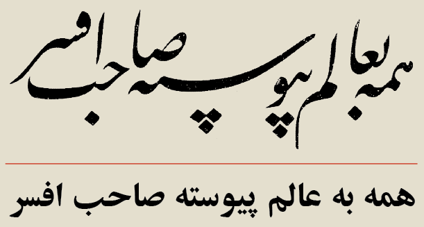
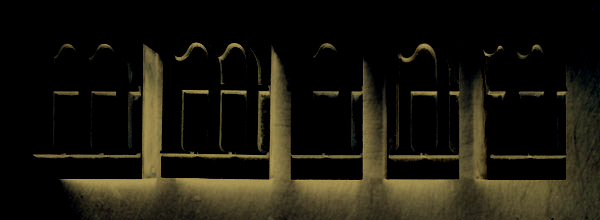
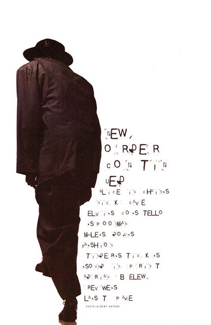
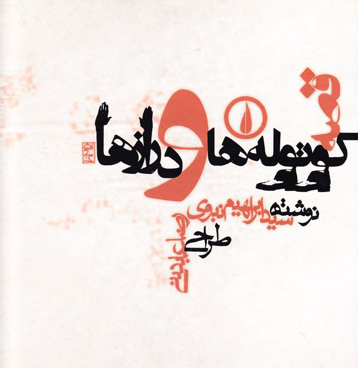
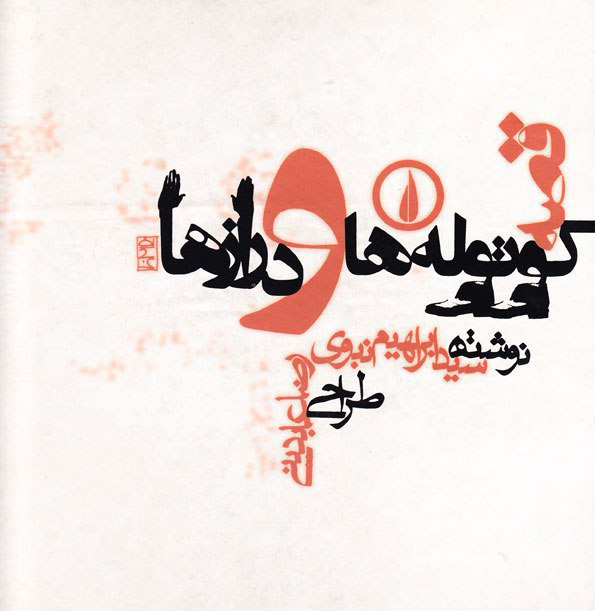

INTRODUCTION
My roots
I’m originally from Iran, where we speak and write in Farsi or Persian which is considered
as a poetic language. Historically, Farsi has undergone great changes and can be categorized into
the following groups:
1. Old Persian
2. Middle Persian
3. Classical Persian
4. Modern Persian
The Old and Middle Persian are not the topic of this discussion. But, I would like to have a
short review on Classical and Modern Persian.
Classical Persian:
The origin of this language is not very clear. Words have their roots in different languages spoken
in various parts of the country but the majority of the words have their roots in Old Persian,
Pahlavi and Avesta. They are represented in classical writings and poems. Ferdowsi claims to have
gone through great pains for a period of thirty years to preserve this language, which was under
pressure from the Arab invaders, and was on the verge of being lost.
It is noteworthy that every country that the Arabs conquered lost its civilization, culture and language
and adopted the Arabic language and way of life. It was only Iran that broke the trend and stood against
the Arabs and preserved its culture and language and even adopted their own version of Islam by creating
Shiaism.
Modern Persian:
Language or Farsi (Arabic pronunciation of Parsi) as spoken today consists of a lot of words of
non-Iranian origin. Some modern technical terms, understandably, have been incorporated from
English, French and German and are recognizable, but Arabic has corrupted a major part of the
language by replacing original Parsi words. What Ferdowsi worked so hard to preserve is finally
being lost.
It is assumed that for the Classical and Modern roots of Farsi, the language still is poetic
in spite of all historical, political and social changes in Iranian society.
Farsi is written from right to left and has different alphabet and sounds than English. Although,
historically Persian, English and many other European and Asian languages have a common vocabulary
core from a reconstructed ancestor language which linguists have called Proto-Indo European,
[*]
The Proto-Indo-Europeans were the prehistoric people of Eurasia who spoke
Proto-Indo-European (PIE), the ancestor of the Indo-European languages according to linguistic
reconstruction. Knowledge of them comes chiefly from that reconstruction, along with material
evidence from archaeology and archaeogenetics.
Source: Wikipedia
but in the context of this discussion there is not so much to compare.
It appears that in the last hundred years, after the Western Modernism in art and design was
accepted in Iran, Iranian graphic design had two different encounters with this issue.
First, it eagerly accepted the Western design the way it was, and then, after Post-modernism, it tried
hardly to adapt so called Western Design to Iranian visual language by looking for its roots in
the past.
Considering two most important elements of graphic design, image and text, the main
source in terms of text was Iranian calligraphy as well as Iranian classic illustration for
image.
As Reza Abdini, Iranian contemporary graphic designer, emphasizes that Farsi script is
the most important element that Iranian designers should refer to. At least, on the eyes of an
intellectual group of designers and artists, using the traditional rules of calligraphy unmixed
with Western medium was a wise approach to express and promote themselves in the international
design communities.
On the other hand, Iranian calligraphy was and perhaps still is one of the most complicated
writing systems in the world, regarding the fact of having seven main and totally different
scripts and complexity of each one.
For this reason together with technological deficiencies, Farsi type design has never had the
same process of evolution from calligraphy to movable metal type, or better to say from old to
new techniques, as it’s seen in western type design.
So, the first Farsi typefaces were adapted to Latin type press machines. But among those typefaces,
there were a few which had some hints of Iranian classic calligraphic features and ironically
they were the most used ones by designers.
Although, these movable Farsi letters looked like their calligraphic ancestors in terms of
contrast, justification feature (“Kashida”, “extended”, “stretched”, “lengthened”), punctuation
marks, etc. Nevertheless, it was a drop in the ocean compared to the classics, the main feature
of Farsi calligraphy, the soul and whole appearance was lost, the bigger image was gone.
Reza Abedini claims that in the past 100-150 years, Iranian eyes have been getting lazy by letters,
declining from multiplex baseline sentences to one Western-like baseline, falling from an
aesthetically complex forms to one thread of boxes of letters and words and the same goes for each
letter and word, from having many multiple forms based on their positioning beside other letters
in the word and even the surrounding words to one definite, predetermined form for each letter.
Typography, design and language has always been an interesting issue for me, but it has happened
so often to hear this comment by other designers and teachers that I make it too complicated and
difficult when it comes to typography and letters. The titles I make are not readable or at least
too complicated to read. I assume that there must be two main reasons for this issue:
- My roots as an Iranian designer, used to deal with a complicated language and writing system
which doesn’t mean that Latin based languages are simple in terms of typography, but are different
than what I’m used to.
- My concurrence with Reza Abedini’s idea that the readability of the letters does not depend on
their forms, but several other factors are involved, such as the whole counter-shape of the
words apart from the form of the letters, the period we live in, our literacy rate and knowledge
about language (for instance poetry, literature, etc), psychology of letters and our vocabulary
of words.
I think that the aesthetics derived from the above reasons must be a good symptom of the fact that
I never was interested in 60's International Typographic movement and subsequently too enthusiastic
about using sans-serif typefaces. Perhaps, that kind of aesthetics which will be explained more
and deeper in the next chapters encouraged me to the designers like David Carson, at least in its
initial point, I found 90's Western graphic design language much closer to the soul of Iranian
calligraphy in terms of dealing with the form and meaning of text.
Furthermore, my constant passion for poetry was a provocative for me to refer to some certain
domains of design and art, such as Persian old calligraphy, Middle Ages art, 20th century text art
in the west and so on, looking for a poetic way of dealing with design, art and language. A
platform in which the relationship between text and image, form and meaning/concept becomes such
strong that none of those components has a meaning without others.
THOUGHT 1
Technology, letters, habits
In the introduction, I briefly mentioned two different encounters that Iranian designers had
with Western technological improvements in the last century. Basically, this happened in all
parts of the world in which Farsi/Arabic writing system was used and designers had to upgrade
their works with the most recent technological achievements.
We know that the type-setting machine originally was made for Latin-based writing systems that
use separate letters. We also know that the first Farsi/Arabic typefaces were made in European
countries such as Germany, France and Netherlands. However, apart from the origins of Farsi/Arabic
typefaces, I would like to concentrate on the twenties century when Middle-Eastern designers got
the chance to use typesetting machines and make the typefaces by their own, although there were
some difficulties.
Farsi/Arabic writing system had to adapt its features to the mechanism of Latin-based typesetting
machines. Therefore, the first encounter happened and that was to accept Western system with its
all advantages and disadvantages. Perhaps, the biggest advantage of this adaption was that
designers could move forward simultaneously with the technological developments and the visual
language derived from the achievements of the time which we can consider as a gain.
But on the other hand, the losses of this gain were more significant. In order to understand
these losses better, we need to have quick look at the most basic differences between Farsi/Arabic
and Latin writing systems. Two of these main differences are shown in the figure below:
[Figure.1] Unlike Latin writing systems, Farsi/Arabic is written from right to left.
Also, most characters in Farsi/Arabic connect to each other in order to make words.
Furthermore, to be able to find out and highlight the losses in a visual approach, we need to take
some examples of Farsi calligraphy, as a good representation of this writing system, compared to
current typefaces. [Figure.2]

[Figure.2] Up > Calligraphy, written in Nasta'liq script, by Mirza Gholamreza Esfahani
(1830–1886)
Low > ‘Zar-Bold’ typeface, by Hossein Abdollahzade Haghighi (1936–2003)
For non-Persian eyes, it must be unbelievable to know that both figures show the same sentences.
Upper one is a calligraphic piece, of course made by hand and the lower one is one of the first
typefaces made by an Iranian designers. According to the opinion of many Iranian designers and
also its widespread usage among Farsi spoken users, this typeface is one of best typefaces ever
designed.
Nevertheless, compared to the upper one, there are several considerable problems.
First and probably the biggest one, is the reduction of base line from multiple to one. Considering
multiple base-lines as a value for this script, we can simply call it “riches-to-rags” which caused
by the appearance of type-setting machines in such countries.
Followed by, it caused two inappropriate and ungraceful aesthetic issues. Classically, the calligraphers
were used to determine the position of letters and words while writing the sentences and according to
three principles:
Letters and words before and after (surrounding letters and words), Meaning of the words
and the most significant, the efficacy of a specific letter form in emphasizing the meaning. These
all meant that not only one shape for each letter-form, but there were several and even innovative
shapes for each letter-form.
However, these all disappeared as soon as the punch-cutters started preparing Farsi letters for typesetting
machine. They had to choose only one shape for each letter-form and position them in a way that they could
connect to each other and since there was only one base-line made for Latin letters, so the multiplicity of
base-line was gone. In the figure below, the red lines show the main base-lines and the blue lines show the
extra base-lines. [Figure.3]
[Figure.3] Up > Calligraphy, written in Nasta'liq script, by Mirza Gholamreza Esfahani
(1830–1886)
Low > ‘Zar-Bold’ typeface, by Hossein Abdollahzade Haghighi (1936–2003)
Furthermore, they had to position each letter-form in one letter punch which meant the letters intersection
had no place anymore. Apart from aesthetic considerations, letters intersection was an important solution
for calligraphers to avoid inappropriate letter and word spacing, but it couldn't happen anymore with the
mechanism of the new machines. This also meant that the dots and diacritics of letters also had to be frozen
inside the punch together with their related letters. Beside the fact that sometimes the calligrapher could
leave out dots of some letters, according to the aesthetics, but with the new system dots were part of
letters, rather than separate characters. In the figure below, you can see the differences. Blue and green
strokes respectively show the letter and word spacing and rectangles show the position of dots.[Figure.4]
[Figure.4] Up > Calligraphy, written in Nasta'liq script, by Mirza Gholamreza Esfahani
(1830–1886)
Low > ‘Zar-Bold’ typeface, by Hossein Abdollahzade Haghighi (1936–2003)
Perhaps, the most distinguishable sign of the influence of typesetting mechanism on Farsi writing system
can be found in a feature called “Kashida”.
[*]
Kashida ("extended", "stretched", "lengthened") is a type of justification used in some cursive scripts related
to Arabic. In contrast to white-space justification, which increases the length of a line of text by expanding
spaces between words or individual letters, Kashida justification is accomplished by elongating characters at
certain chosen points. Kashida justification can be combined with white-space justification to various extents.
The analog in European (Latin-based) typography (expanding or contracting letters to improve spacing) is sometimes
called expansion, and falls within micro-typography. Kashida is considerably easier and more flexible, however,
because Arabic-Persian scripts feature prominent horizontal strokes, whose lengths are accordingly flexible.
Source: Wikipedia
In classical calligraphy, this feature was used for three purposes: first to elongate the characters in
order to justify the sentences, secondly to create intended compositions by stretching some characters on
top of the other letters without making inappropriate white spaces and thirdly to emphasize some letters
or words according to their meaning and importance in the sentence. New typesetting system could afford
only the first purpose and those two other roles, if not completely disappeared, at least couldn't play
the same role in the new texts as before.
As it's said before, calligraphers used ‘Kashida’ to stretch the characters according to the letters that were
using this feature and the letters that were supposed to connect to it. It meant that like the other characters
with several forms, ‘Kashida’ didn't have an absolute shape, but it could create very different curves based on
its connection to letters before and after. With the metal type machines, the solution that type setters and
designers found to apply ‘Kashida’ to the machines was to make extra lead for this feature. But since the
position of all letters in the leads were fixed, this feature had to have an absolute form as well, therefore
it lost all different natural curves and became a simple horizontal stroke, sort of a rectangle. Figures below,
show the changes of ‘Kashida’ from manuscripts to metal typesetting and digital texts. [Figure.5]
[Figure.5] Up > Calligraphy, written in Nasta'liq script, by Mirza Gholamreza Esfahani
(1830–1886)
Low > ‘Zar-Bold’ typeface, by Hossein Abdollahzade Haghighi (1936–2003)
As it's shown in the figures above, in the calligraphic piece there are much more connection between letters
in the composition of the sentence, achieved by characters going on top and underneath each other and ‘kashida’
helps this more by filling the empty white spaces. This is while the second one creates only a horizontal
thread of letters which can damage the reading rhythm. This becomes more clear if we look at the larger
calligraphic text in compare with the same text made by typesetting or digital typeface. [Figure.6-7]
[Figure.6] Calligraphy, written in Nasta'liq script, by Abdolghaffar Tabrizi, 1854
[Figure.7] Text, set in ‘Naskh-Bold’ typeface
And it becomes almost unreadable when a Farsi paragraph is fully justified using ‘Kashida’, as you
can see in the figure below. ‘Kashida’ is shown by red strokes. [Figure.8]
[Figure.8] Text, fully justified, set in ‘Naskh-Regular’ typeface
Along with technological developments in the recent decades, designers and font developers tried
to achieve better results of non-linear Farsi texts, considering elongation and vertical arrangement
of letters. In order to make the texts resemble to calligraphic ancestors as much as possible,
they took two steps: First step was to make more ligatures and alternatives to create vertical
arrangement of letters and break potentially horizontal structure of Farsi sentences, as you can
see below. [Figure.9]
[Figure.9] Standard ligatures by ‘Adobe Arabic-Bold’ typeface, by Tim Holloway (2004-2005)
The problem with this solution was that the horizontal appearance of the whole text still was there.
But the bigger problem was/is that the whole idea of making ligatures for Farsi/Arabic typefaces was/is
not a good solution. In Latin, ligatures are limited to a few combination of letters such as ‘ff’,
‘fi’, ‘fl’, ‘ffi’ and ‘ffl’. [Figure. 10]
In the days of metal fonts, ligatures were invented to solve a practical typesetting problem which was
the physical collision of some features of certain characters. Later on, technological problem solved
this problem and therefore presence of ligatures in the texts could only have stylistic reasons.

[Figure.10] leads showing Ligatures by ‘Garamond’ typeface
In Farsi calligraphy, because of the connection between letters, each pair of two letters basically
could be considered as a ligature. Therefore, ligatures didn't actually exist or the whole text was
made by ligatures and unlike Latin, the appearance of ligatures in Farsi metal type had only
aesthetic reasons, but this was assumed as a functional solution to resemble stylistic features of
calligraphy. [Figure. 11]
[Figure.11] Farsi punch-cuts by ‘Ferdousi-Bold’ typeface, 1960s
Overall, having too many ligatures (as vertical arrangements of letters) in typefaces not only help
the reader to have a fluent reading experience with Farsi text, but caused a lot of fixation and
barrier points for Iranian readers.
Second step that designers together with developers took was to focus on the significant role of
‘Kashida’ in creating non-linear threads of letters. Historically, this feature just on its own had
a potential capacity to break the linear letter arrangements and add natural and smooth curves to
the text. Compared to the first step, this was a better solution for Farsi letters, both aesthetically
and functionally. Nevertheless, considering the visual aspects of Iranian calligraphy, combination of
both steps would resem that old ancestor the most. A very good example of this kind of approach
was ‘Tasmeem’ by Thomas Milo.
[*]
Tasmeem is a set of Arabic enhancements for Adobe InDesign ME, developed by WinSoft International
and DecoType. Tasmeem allows users to create typographically advanced text in Arabic in the
Middle Eastern and North African versions of InDesign, turning it into a typesetting and design
tool for Arabic.
Source: Wikipedia
To make Arabic as pleasantly legible and beautiful as any script, calligraphers and typographers
designed a large number of ingenious improvements and perfections. Tasmeem captures this expertise
in the form of simple tools.Tasmeem returns to the sources of the Arabic script traditions, to liberate
the new generation of high-tech savvy designers and offer them a real Arabic-friendly environment.
Source: [PDF] Tasmeem™ Manual - DecoType
The essence of Arabic script is to be found not in calligraphy, but in script grammar. Calligraphy
refers to the quality of script, script grammar to the structure of script. For Arabic, the key to
the successful transition from text manufacture by scribes to mechanized text reproduction by means
of movable type was the marriage of integral script expertise with typographic know-how. This involved
the collaboration between different personalities and social groups.
Compared to the previous efforts and products in Farsi/Arabic type design, ‘Tasmeem’ had two big
advantages: First, more than being only a package of typefaces, it was a technology, a set of
plug-ins for Arabic script that could turn InDesign in a veritable Arabic typesetting system and
provide technical and stylistic possibilities for designers to implement most of the calligraphic
features, such as natural ‘Kashida’ and vertical letter arrangements, to their typography.
[Figure. 12]
[Figure.12] Arabic script is the result of a millenium and a half of intense and competent design development.
Like for Latin script, computer technology should facilitate such a heritage. The first line presents DecoType
philosophy in a nutshell. In black, the result.
In colors, the letters. In outlines, the structure. The typeface is DecoType's Nastaliq, the language is
Persian. The second line, for comparison, shows the same text in OpenType. The typeface is Adobe Arabic.’
Although, ‘Tasmeem’ was appreciated in western type design and technology world, it couldn't catch the
eyes of designers from the eastern side for three main reasons: First of all, the package was too
expensive for the users in Middle-East. Furthermore, it only was only limited to Adobe InDesign ME and
was not supported by other common design software companies like Photoshop, Illustrator, etc. And finally
and the most important reason was that since the technology of ‘Tasmeem’ was not usable within
font-editors such as ‘Glyphs’, ‘Fontlab Studio’, ‘Robofont’, etc. So the type designers couldn't use it
in order to create their own typefaces, so it stayed as a package of typefaces with some specific
possibilities resembling calligraphic scripts. The figures below, show some possibilities of ‘Tasmeem’:
[Figure. 13-14]
[Figure.13] Tasmeem, ‘Naskh’ tyepface, characters variants
Variants of letter alternatives are different than ligatures. They offer different forms for each letter,
depending on the position of that letter in the word and the letters before and after.
[Figure.14] Tasmeem, Sample text using ‘Naskh’ tyepface
This text shows two advantages of Tasmeem typefaces from the others:
First, curved (natural) ‘Kashida’ is applied to some characters that creates smoother connections.
And secondly, instead of using ligatures, the text is made by characters variants and in some cases,
these alternatives create vertical arrangements of letters which helps to break the linear text and
provide dynamic eye movements for the reader.
Overall, despite that technological enhancements were applied to Farsi/Arabic scripts, but there
were still two things lost: First that logical and somehow improvised connection between form and
meaning, that sort of relationship which was the basis for calligraphers works. Secondly, the
question that how this relationship was applicable to the new, modern typefaces and how meaning
could be used as a design tool. Packages like ‘Tasmeem’ looked necessary and significant to be made, but eventually they stayed
as plug-ins to resemble the old scripts rather than adding extra layer of meaning to the modern
typefaces. There were gains of this adaptation of Farsi/Arabic letters to western typesetting
system, but the losses weighted much more.
The 'four forms' analysis of Arabic script is mistaken, and really represents a particular
mechanical solution to typesetting a simplified model of Arabic. In fact, there are two kinds
of letters: those that can connect on both sides, and those that only connect on the right.
The actual ways in which the letters connect, and hence how many forms they require, depend on
the style of the script and what they're connecting to. There is no historical style in which
there were only four forms of any given dual-joining letter.
John Hudson
John Hudson is a type maker, a term he prefers to type designer, since he spends more time building
things than designing. He is co-founder, with Ross Mills, of Tiro Typeworks, a digital foundry
specializing in custom font development for multilingual computing and publishing.
In the same way, Iranian/Arabic contemporary artists and designers were/are divided to two groups.
One follows this idea of adaption, while the other tries to create more suitable and costume system
or structure, specifically made for Farsi/Arabic writing system. One still makes typefaces that
follows ‘four forms’ idea of simplified Arabic and the other improves the thought behind ‘Tasmeem’.
Persian script is the most important element that Iranian designers should permanently refer to.
Among these two groups, Reza Abedini is probably the most outstanding designer from the second group.
In the following, I will investigate his works as typical examples of this second thought.
There were always two challenges while making my works. First, how to deal with Farsi typefaces
and secondly, how to combine them with Latin typefaces. Fundamentally, this challenge still exists
for all Iranian designers.
For many years, there was a common thought among Iranian designers that Farsi script intrinsically
is problematic and typesetting in Farsi wouldn't be as appealing as in Latin. Reza who was probably
influenced by Ahmed Fardid's philosophical thinking, didn't surrender by this simplistic point of view.
Fardid was and still is generally regarded as a brilliant yet unsystematic thinker who introduced
Iranian intellectuals to German philosophy. Since the 1950's he served as Iran's leading authority
on the philosophy of Martin Heidegger. Influenced by Heidegger and the German historicist tradition,
Fardid gave the Orient/Occident dichotomy a philosophical twist.
Fardid advocates a type of Geisteswissenschaften, or a moral philosophy not bereft of a theosophical
introspection. He argues that humans have three dimensions: scientific, philosophical and ethical.
Although the first two have been prominent in the Western tradition of thought, the last has been
conspicuously absent.
As such, Fardid reaches the conclusion that the West has to be abandoned both as an ontology and as
a way of life. He believes that “Gharbzadegi” or “Westernization” is, thus,a transitional phase that
one has to leave behind to reach to the essence of the West.
To undertake this intellectual odyssey, however, one has to become Westernized, not in the sense of
becoming alienated from one's own self, but in the more subtle sense of becoming cognizant about the
adversary. To confront the West, Fardid asserts, one needs to get to the very core of its philosophy
and ontology.
Getting to know the other became, in Fardid's analysis, a prerequisite for knowing the self. For him,
the main issue was the revival of the authentic Persian traditions and this could not occur without
criticizing the principles of Western culture and technology, namely empiricism, rationalism and humanism.
Fardid's concept of the West was warmly received by an important segment of the community of Iranian
intellectuals eager to reassert their own identity during a time of change both in the East and in
the West.
Instead of conceding the problem to the essence of the Persian script, Reza decided to concentrate on
the modern technology which was the foundation of graphic design and that was where he found the
problem and the solution. One of the solutions was to make both Farsi and Latin letters by hand in
order to incorporate them. [Figure.15]
[Figure.15] Reza Abedini's handmade letters in Farsi and Latin
In his view, the problem was the idea of using ‘four forms’ and ‘separate letters’ typesetting in
Farsi script. Historically, the beauty and elegance of Farsi script was the vertical arrangement of
letters. In his eyes, the invention of metal typesetting was in compliance with the soul and character
of Latin script. But, the form and position of Farsi/Arabic letters in the words was not absolute.
Therefore, Iranian/Arabic designers started to think of separate Farsi characters since their first
encounter with the mechanism of metal type. For him, the Beauty of Farsi script was sacrificed for
the technique. Aesthetics was a big loss, and in return of a minor and defective gain of technique.
Since we've seen and read the newspapers and documents, set in simplified Farsi metal type for many
years and calligraphy as our historical source of readability has been replaced by simplified Farsi as
a new source, naturally and unconsciously our habit of readability has therefore been simplified as well.
Our eyes has become lazy.
The other important and problematic issue for Reza was the readability. He disassembled and distorted
the letters in order to bring back the improvised approach of calligraphy to Farsi typefaces. But this
wasn't only limited to the letters, he wanted to acquire a sort of Iranian dialectics and soul in his
design, rather than literally using Iranian illustrative elements.
Square is not Swiss by itself, but the way of using this element makes it Swiss in Swiss design or
Japanese circle in Japanese design. We can easily have Iranian circle.
To him, using motifs of Iranian ancient potteries, carpets such as the Phoenix, Boteh, etc or even was
as worse as to Latinize Farsi typefaces. Also, using of Iranian scripts like ‘Nastaliq’ was not the case.
In this case, one of the good examples for him was Polish design that was and still is very recognizable
for all the designers, without using any element or symbol of Polish traditional art.
Reza Abedini's works are utterly modern and contemporary, there is no Boteh, nor is there ‘Nastaliq’.
They don't try to resemble The Iranian traditional art, but instead, they utilize the traditions to
present that dialectics in a contemporary way. Unlike the designers who use the folklore and native
elements –in this case, Iranian designers using ‘Nastaliq’– to separate their works from the prevalent
international design and at the same time highlight them among the others, he takes a different direction
in dealing with these elements. By distorting and devaluing classical elements specially ‘Nastaliq’,
he ruins the common image of eastern and western eyes about their historical value and consequently
re-contextualizes them within his works. Somehow, using ‘Nastaliq’ becomes a statement of his reaction
to that common image. [Figure.16]
[Figure.16] One of Reza Abedini's first works, dealing with combining ‘Nastaliq’ with a Western-like image
At this point, his critical encounter with graphic design in Eastern world takes the orientation as same
as David Carson's in West. The works of both designers derive from their formalistic point of view of
graphic design and their reaction on design conventions. Carson rejects 1960s based grid formats,
information hierarchy and consistent layouts and introduces the innovative typographies and distinct
layouts. On the other side of the world, Reza Abedini rejects the whole idea of Western-like design in
Iran and Latinized typography and layout and takes Iranian classical calligraphy as a study source for
his experimental, modern and unconventional designs. [Figure.17-18]
[Figure.17] The story of dwarfs and longs, book cover, designed by Reza Abedini, 2000
[Figure.18] Raygun, Issue 01, magazine cover, designed by David Carson, 1992
In terms of letters and typography, there are three common procedures in both designers works:
First, form of characters. Keeping the bigger image in mind, They both consider a specific form for each
character. For instance, if there are four ‘A’s in a word, each ‘A’ has its own shape, depending on the
characters and words before and after.
Secondly, the positioning of characters and words. It means that each character is positioned individually
and different than the same character in the part of one word and the words before and after, depend on
typographic factors such as ascenders and descenders, vertical, horizontal or diagonal strokes, angular or
curved shape of letters and so on and this goes the same for the words.
And finally, baseline of the characters and specially the words. Depending the counter-shape of the words,
they go up or come down from the main baseline. Of course these properties are not taken into account
all the time.
It become more interesting, if we think of Iranian calligraphy in which all these three issues are significant.
Here, it might be taken as my personal and subjective point of view, but it makes sense to compare their works
to Iranian calligraphy and imagine a common source for both designers. In case of Carson, it must be unexpected
to imagine him, thinking of or looking at Iranian calligraphy, but here the source that a designer uses is one
thing and the interpretation of audience is a completely different issue. Therefore, to clarify this subjective
interpretation more, I would like to take two examples from each designer and visualize the common points, in
comparison to two calligraphic pieces. [Figure.19-20-21-22-23-24-25-26]
[Figure.19] Letter ‘Eyn’ variants, Thuluth script, Ottoman calligraphy, by Mehmed Şevkî Efendi (1829-1887)
[Figure.20] Calligraphy, written in Nasta'liq script, Siahmashgh style, by Mirza Gholamreza Esfahani (1830–1886)
[Figure.21] In the beginning, Reza Abedini Poster exhibition, poster, designed by Reza Abedini, 2001
[Figure.22] Raygun, Issue 05, magazine cover, designed by David Carson, 1994
[Figure.23] 7th Iranian graphic design biennale, poster, designed by Reza Abedini, 2003
[Figure.24] Raygun, Issue 15, magazine cover, designed by David Carson, 1994
[Figure.25] Third line, Reza Abedini Poster exhibition, poster, designed by Reza Abedini, 2006

[Figure.26] Raygun, magazine layout, designed by David Carson, 1994
“Do not mistake legibility for communication”
David Carson
“Try to not to read this text, see it.”
Reza Abedini
Perhaps, more important than all these, the improvised way of creating typography and dealing with
letters and therefore adding extra layer of meaning to the text is most significant connection point
between the above contemporary works and their ancestors.
THOUGHT 2
Philosophy, connotation and metaphor
Theo Van Leeuwen in his article (Typographic meaning, Visual Communication 2005; 4; 137) uses two key
semiotic principles to explain how letter forms can become signifiers in their own right:
Connotation and metaphor.
Connotation
He uses the term connotation in a specific sense, building on Barthes’ concept of ‘myth’
[*]
Connotations come about through the ‘import’ of signs into a specific domain where they have hitherto
not formed part of the accepted, conventional repertoire. Their meanings are then formed by the
associations that exist, within the domain into which the signs are imported, with the domain from
which they are imported.
and explains that connotations do not determine meaning in a narrow sense.
By applying this to letters, he explains that the connotations form a meaning potential which can be
narrowed down when a typeface is used in a specific context. Connotations are a resource for meaning-making
and their understanding rests on cultural knowledge. Designers must therefore assume that users of their
typefaces will recognize ‘where these signs come from’, and users, in turn, will have to assume the same
for their readers or viewers.
He takes two typefaces as typographic examples and says that the signs from the electrical
and industrial domains are imported into the domain of letter forms, and it therefore becomes available for
uses in which the idea of ‘electricity’ or ‘industriality’ is to be conveyed. [Figure.1-2]
[Figure.1] Circuit typeface, by Peter Grundy, 1982
[Figure.2] Foundry Fabriek typeface, by The Foundry
Bellantoni and Woolman (2000: 6) have written that the printed word has two levels of meaning, the ‘word
image’, the idea represented by the word itself, constructed from a string of letters, and the ‘typographic
image’, the ‘holistic visual impression’. And Brody Neuenschwander (1993: 13, 31) calls typography ‘a fully
developed medium of expression’, possessing ‘a complex grammar by which communication is possible’, and he
quotes Hans-Rudolf Lutz who has said that ‘design is also information’.
To me this idea of Teo van Leeuwen that he looks at letter forms and analyzes them from his writer point of
view is very interesting. Such an idea can prepare a platform in which writers and designers can discuss
about letters from a common perspective. It usually happens that writers do not talk about typography and
designers do not talk about literature and none of these two communities enter each other's domains.
This lack of knowledge can be caused by two reasons: humbleness and carelessness. Although when it comes to
practice, the interference, negotiation and in its best the dialogue is always there, between designers and
writers.
A good example of this dialogue is when a writer r a poet, for instance Stéphane Mallarmé, puts notes for
the designer to consider specific layout and hierarchic order of the words according to the meaning and
importance of the words. Here, there is of course a dialogue going on. But the starting point which makes
this dialogue, between form and meaning, to happen is even more important.
I can imagine a triangle diagram which shows how the problem starts and a circular diagram which shows how
such a dialogue happens. [Figure.3]
First diagram, shows that most of the writers use the first and second vertices of the triangle to create
theirs works and communicate with their readers in a textual way. It also shows how designers usually use
the second and third vertices to create typography and communicate with their viewers in a visual way.
The circular diagram shows how that dialogue can happen between a writer and a designer. But more important
it shows how those three parameters can help the a writer, within literature, to become a typographer in a
textual way and typographer, within typography, to become a writer in a visual way.
METAPHOR
Theo van Leeuwen uses the principle of metaphor or the metaphoric potential of specific features of letter
forms when it is not possible to ‘place’ typefaces by connotation in order to provide meaning. He applies
‘distinctive features’
[*]
In linguistics, a distinctive feature is the most basic unit of phonological structure that may be analyzed
in phonological theory.
,an idea from phonology, to the letter forms and explains that distinctive features were regarded as building
blocks for meaning, but not as meaningful in themselves. He says that this view of the ‘distinctive’ role of
speech sounds is quite similar to the view held by many traditional typographers that letter forms have no
meaning in themselves and can only be more or less readable and more or less aesthetically pleasing.
However, by giving some examples, he claims that distinctive features can become meaningful and be applied
to the distinctive features of letter forms. For instance, ‘roundness’ of a rounded typeface readily lends
itself as a metaphor for ‘organicness’, ‘natural-ness’, ‘femininity’ and other related concepts. Or higher
ascenders and lower descenders of a typeface can convey a sense of ‘aspiring’ to “higher” things’. Or the
irregularity of these letter forms can therefore be used as a metaphor for other kinds of irregularity,
other ways of going against the norms, for instance to represent the unconventionality or rebelliousness
of youth subcultures and their music.
MULTI-MODALITY
He also explains that typography is no longer a ‘separate’ semiotic mode. Typographic communication is
multi-modal. It uses a variety of semiotic resources. Contemporary typography creates meaning, not just with
letter forms, but also with color, three-dimensionality, material texture, and, in kinetic typography,
movement. Increasingly many typefaces also incorporate iconic elements, and deliberately blur the boundaries
between image and letter-form, thus regaining a connection that has been lost in the course of the development
of the alphabet.
THOUGHT 3
Psychology, letters, habits
In the introduction, I briefly explained about the Reza Abedini's idea of readability of letters and the
several influential factors on readability such as the counter-shape of the words apart from the form
of the letters, periodical and cultural habits, our literacy rate and knowledge about language, psychology
of letters and our vocabulary of words.
Also, I pointed to complex or at least difficult readability of my own works which comes from the similar
idea. Here, I would like to take a deep look at some of this factors:
Why the right font layout makes us feel good?
In a study by psychologist and researcher Kevin Larson
[*]
Kevin Larson is a researcher on Microsoft’s Advanced Reading Technologies team. He works with type designers,
psychologists, and computer scientists on improving the on-screen reading experience.
, 20 volunteers – half men and half women – were separated into two groups. Eacht group was shown a separate
version of The New Yorker, one where the image placement, font, and layout were designed well and one where
the layout was designed poorly.
The researchers found that readers felt bad while reading the poorly designed layout. Sometimes, this
feeling would be expressed physically with a frown.
[*]
The corrugator supercilii facial muscles that help produce a frown have been linked to the amygdala,
an area of your brain responsible for emotion.
Meanwhile, the participants who read content from the good reading layout, felt like it took less time to
read and felt better. People exposed to the well-designed layout were found to have higher cognitive focus,
more efficient mental processes, and a stronger sense of clarity.
The researchers concluded that well-designed reading environments don’t necessarily help you understand
what you’re reading better, but they do make you feel good, causing you to feel inspired and more likely
to take action.
In his article called
The Science of Word Recognition, Dr. Larson describes three major categories
of word recognition models:
- Word shape
- Serial letter recognition
- Parallel letter recognition
In relationship with Reza Abedini's works, we might only need to take a look at the first model:
The word recognition model that says words are recognized as complete units is the oldest model in the
psychological literature, and is likely much older than the psychological literature. The general idea is
that we see words as a complete patterns rather than the sum of letter parts. Some claim that the information
used to recognize a word is the pattern of ascending, descending, and neutral characters. Another formulation
is to use the envelope created by the outline of the word. [Figure.1-2]
[Figure.1] Word shape recognition using the pattern of ascending, descending, and neutral characters
[Figure.2] Word shape recognition using the envelope around the word
The word patterns are recognizable to us as an image because we have seen each of the patterns
many times before.
Kevin Larson
We can consider a typeface more readable than the others just because simply we've used to see that typeface
or read the texts set in that particular typeface more often than the others. This idea was the initial point
for the designers like Abedini and Carson to change the visual habit of their audience.
It does not really matter if we take form and concept apart from each other or think that form is concept
and apart from all the other parameters involved in readability, we can claim that for both designers form
was the most convenient way to communicate with the reader.
Here, the meaning of the text shouldn't be taken as same as the concept, but meaning was the initial step
of the design process and furthermore an extra layer of typographic meaning added to their design.
Culture impacts your preference for fonts
For none of these two designers designing for legibility and readability was not to design for saccades
and fixations, but the whole idea of readability would be problematic. The way of dealing with text in
their design was supposed to change the reading habits first of all. In case of Abedini, the historical
habit was the most challenging issue and in international projects, cultural characteristic became
significant. For Carson the historical taste of typefaces was the struggling part and then sub-cultural
values of his time.
Reza's approach to deal with this issue was to use connotations such as using the most used Persian
typefaces in Iranian newspapers, published during and after the Iranian revolution in 1979, like Zar-Bold
to make a bridge between his design and the reader's cultural habits and within this bridge using the
historical calligraphic references, which would be counted as the second connotation, was the stimulus
way to challenge those habits. But the most important point before getting to design process was the meaning
of the text which would determine the design approach and the kind of connotations that could or would be
chosen. [Figure.3-4]
[Figure.3] Ninety nine names of Allah, calligraphy piece written in Thuluth script
[Figure.4] Persian Type and Typography, lecture by Reza Abedini, poster, designed by Reza Abedini, 2003
In the poster above, Reza uses two kind of connotations. First one is the typeface which is Zar-Bold and
the second connotation is the way he uses this typeface or the layout of the text that refers to the
historical calligraphic source. Apart from his manipulation of the letters and words, positioning of the
words and multiple baselines of characters within the words- which we can consider as a metaphorical
solution- meaning of the text, before the whole typographic approach, becomes a starting point and a tool
of design for him to take the concept through the design process.
The source of his poster shows ninety nine names and attributes of Allah. It shows that Allah can be powerful,
kind, witness, listener, mighty and etc, and this goes the same for his poster that indicates the fact that
there are many ways to do typography and type design. Here, it becomes difficult to separate form from
concept. Furthermore, we can see that kind of connection between word image, word meaning and typographic
impression.
One explanation for why some fonts make you feel a certain way is because of deep links in culture.
For instance, ‘Courier’ fonts were designed to resemble old memos written on type writers. Or many people
relate ‘Helvetica’ with the US Government because it’s used in tax forms. These associations are difficult
to remove and should be considered when deciding on a font choice.
Because fonts are designed by humans, there is usually some meaning attached to them. You don’t want to
choose a font that is easily associated with something in our culture that’s markedly different than the
vibe you’re trying to give off.
Abedini takes the same approach for his Latin language based projects. But here, Iranian historical
reading habits are replaced with the designer's distinctive cultural features in the global domain. The
challenge is to how to differ the own from the others by cultural values and open a door for bilingual
dialogue. [Figure.5-6]
[Figure.5] Flute recital, poster, designed by Reza Abedini, 2005
[Figure.6] Film by Sepideh Farsi, poster, designed by Reza Abedini, 2004
This design approach can be explainable about David Carson's works as well. In his case, the neutral spirit
of the typefaces like ‘Helvetica’ and the whole idea of the systematic and structured design such as 1960's
International Typographic Movement would be the point of struggle. The idea of having a typeface like
‘Helvetica’ which could be applicable to any kind of design thoughts and products was problematic. For him,
legibility of that kind of typeface didn't exactly mean the communication. For the same reason, a non-legible
text could still communicate, but in a different level than the literal meaning of the text. A complete
non-readable text could still convey a message and this message sometimes could be even a bigger and more
communicative message. [Figure.7/1-7/2]
[Figure.7/1] Ray Gun, Bryan Ferry interview, magazine spread, designed by
David Carson, 1994
[Figure.7/2] Ray Gun, magazine spread, set in Hermann Zapf dingbats, detail
Carson explained later that he did it because the interview was rather dull. Although, the whole text was
published in a legible font at the end of the same issue, however his design approach was completely based
on the meaning of the text and he used this meaning, in this case a boring and dull text, as the starting
point and a tool to convey a bigger message, a metaphoric message to the reader that he/she should not read
the text. Although the dingbats might or might not have meaningful distinctive features by themselves, these
features, however, are added to the dingbats by the metaphoric message of Carson's design approach.
“…[direct] associations refer to the influence of historical precedence on affective response to
typography. The typeface Fraktur has many associations with Nazi Germany, and Helvetica is commonly
associated with the U.S. government since it is used by the IRS on tax forms. Those fonts acquire meaning
through your semantic network. Whenever you see a font (e.g., Fraktur), you associate meaning — based on
the context. That includes semantic meaning (e.g., Nazi Germany) and emotional meaning (e.g., disgust).”
Shaikh, 2007, pp. 21
Furthermore, Carson's typography perhaps can not connect us to some certain historical references in the
past, but for sure it directly connects us to the general artistic approach in the other fields of 90's
like music, fashion and fine-arts. This happens not by our expected connotation of typography, but through
the potential semantic network which is provided by Carson's typography itself.

 
